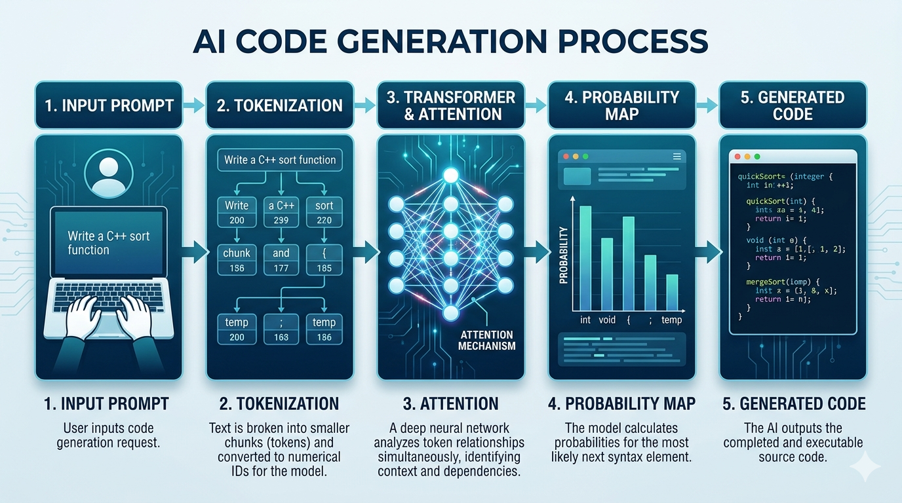
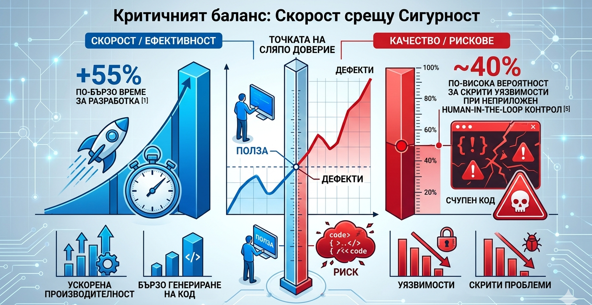
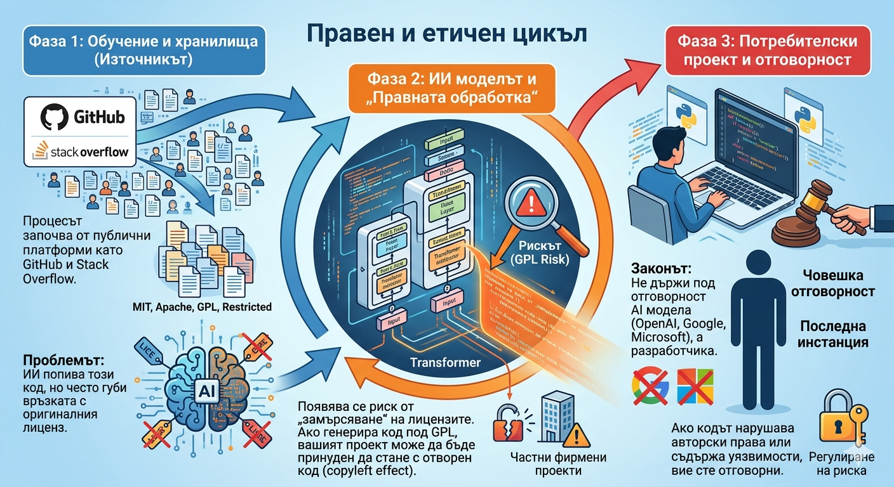

Въведение
В съвременното софтуерно инженерство навлизането на инструменти като GitHub Copilot, ChatGPT и Claude вече не е просто експериментална фаза, а част от ежедневния работен процес на милиони специалисти [1]. Тези технологии, базирани на генеративен изкуствен интелект, обещават революция в начина, по който изграждаме цифровия свят.
Изкуственият интелект (ИИ) променя фундаменталната парадигма на писане на код. Програмистът се трансформира от единствен „автор“ на всеки ред код в критичен „редактор“ и навигатор на системи, които генерират предложения в реално време. Тази промяна обаче носи със себе си специфични рискове – от нови вектори на уязвимост в сигурността до потенциално влошаване на качеството на софтуерната архитектура.
Настоящата разработка има за цел да изследва технологичните механизми, които позволяват на ИИ да „пише“ код, и да дефинира границите на разумното доверие, което можем да му гласуваме. Ще разгледаме баланса между повишената производителност и етичните, правните и техническите предизвикателства, които съпътстват тази нова ера.
Технологична основа: Как ИИ „пише“ код?
За да разберем доколко можем да се доверим на ИИ, първо трябва да разберем, че той не притежава логическо мислене. Неговият процес е чисто математически и статистически.
- Large Language Models (LLMs): За ИИ програмният код е просто още една форма на език, подчинена на специфични правила и граматика [5]. Моделите се учат да разпознават смисъла зад синтаксиса.
- Архитектурата Transformer и Attention механизмите: Благодарение на „механизмите за внимание“, моделът може да прецени кои части от кода са най-важни в даден момент. Той предвижда „следващия токен“ (парче код), базирайки се на статистическа вероятност, а не на разбиране на бизнес логиката [1].
- Обучение върху масиви от данни: Моделите са обучени върху гигантски хранилища с отворен код (като GitHub). Това им позволява да познават хиляди библиотеки и стилове на програмиране, но и да наследяват грешките, допуснати от хората в тези проекти [3].
- Контекстен прозорец: Това е способността на модела да „вижда“ текущия контекст. ИИ разбира вашия проект чрез подадените му файлове и променливи, но неговата „памет“ е ограничена до определен обем информация в рамките на една сесия.
Фигура 1: Пътят на заявката през архитектурата Transformer

Схемата илюстрира как ИИ превръща неструктуриран текст в логически издържан програмен код чрез статистическо предвиждане на токени, базирано на контекста [1].
Предимства в използването на ИИ в програмирането
Интегрирането на ИИ в работния процес не просто ускорява писането на код, а променя начина, по който решаваме инженерни проблеми.
- Автоматизация на шаблонен код (Boilerplate): ИИ е ненадминат в генерирането на повтарящи се структури – създаване на класове, конфигурация на API крайни точки (Application Programming Interface endpoints) или писане на стандартни SQL заявки. Това позволява на програмиста да се фокусира върху логиката, а не върху синтаксиса [1].
- ИИ като интерактивен наръчник: Вместо прелистване на документация, ИИ предлага незабавни примери за нови езици или библиотеки. Това драстично скъсява времето за учене на нов синтаксис.
- Оптимизация и рефакторинг: Чрез анализ на съществуващ код, инструментите могат да предложат по-елегантни и бързи алгоритми, откривайки шаблони (patterns), които човекът може да пропусне [2].
- Генериране на тестове (Unit Testing): ИИ улеснява писането на тестове, като автоматично покрива различни сценарии и гранични случаи, което води до по-стабилен и надежден софтуер [2].
Проблемът с доверието: Рискове и предизвикателства
Въпреки мощта си, ИИ не притежава истинско разбиране за света и бизнес логиката, което създава сериозни рискове:
- Когнитивни „Халюцинации“: Най-големият риск е генерирането на код, който изглежда перфектно, но използва несъществуващи функции или библиотеки. Това изисква задължителна проверка на всеки ред [1].
- Уязвимости в сигурността: Моделите на ИИ често повтарят грешки от тренировъчните си данни – например използване на остарели функции за криптиране или генериране на код, податлив на SQL инекции [5].
- Логически и контекстни грешки: Кодът може да е синтактично правилен, но да не решава конкретната задача на проекта, защото ИИ не „разбира“ крайната цел на софтуера.
- AI Technical Debt (Технически дълг): Безкритичното приемане на генериран код води до натрупване на системи, които са трудни за поддръжка, тъй като оригиналният автор (програмистът) не разбира напълно как работят [3].
Фигура 2: Критичният баланс - Скорост срещу Сигурност

Графиката показва парадокса на ИИ в програмирането: висока скорост на генериране, но и висока вероятност за скрити дефекти.
Правни и етични аспекти
Използването на ИИ в софтуерното инженерство повдига безпрецедентни правни въпроси, които индустрията все още се опитва да разреши.
- Авторско право и лицензиране: Повечето AI модели са обучавани върху код с различни лицензи (като GPL, MIT, Apache). Съществува риск ИИ да генерира фрагмент, който е обект на рестриктивен лиценз (напр. GPL), и ако той попадне в търговски продукт, това може да доведе до правни последици за компанията [3].
- Интелектуална собственост на потребителя: Когато използваме онлайн инструменти като ChatGPT или Claude, съществува риск подаденият от нас фирмен код да бъде използван за дообучаване на следващите версии на модела. Това може да доведе до изтичане на търговски тайни и поверителна информация [5].
- Отговорност при грешки: От правна гледна точка, софтуерният инженер носи пълната отговорност за работата на софтуера, независимо дали кодът е генериран от ИИ или не. Към момента законът не признава ИИ като самостоятелен субект с авторски права [4].
Фигура 3: Жизнен цикъл на данните и правни рискове

Схемата показва как кодът преминава от публични хранилища през AI модела до крайния потребител. Основното предизвикателство е запазването на интелектуалната собственост и спазването на специфични лицензи като GPL [3], [4].
Най-добри практики за работа с ИИ
За да се минимизират рисковете, работата с ИИ трябва да следва строга методология:
- Принципът Human-in-the-loop: Никога не приемайте генериран код на сляпо. Всеки ред трябва да бъде прегледан, разбран и валидиран от човек [1].
- Автоматизирано тестване: Задължително е прилагането на Unit тестове и статичен анализ (Linter) върху кода, генериран от ИИ, за да се открият логически грешки или уязвимости още в началото [2].
- Prompt Engineering (Инженеринг на заявките): Качеството на кода зависи от точността на инструкциите. Даването на ясен контекст, дефинирането на граници и изискването на обяснения от ИИ води до по-сигурни резултати [1].
Заключение
Изкуственият интелект не е заместник на софтуерния инженер, а мощен катализатор на неговата продуктивност. Той премахва тежестта на рутинните задачи, но изисква по-високо ниво на критично мислене и архитектурно планиране. В ерата на ИИ най-ценното умение няма да бъде познаването на синтаксиса, а способността да се верифицира и интегрира интелигентно чуждият (машинен) код в сигурни и мащабируеми системи.
Използвани източници
- GitHub Octoverse Report (2024/2025): The state of open source and AI-powered development. (Основен източник за статистиките за продуктивност и Prompt Engineering).
- Stack Overflow Developer Survey (2025): AI and the Future of Coding. (Източник за практиките за тестване и доверието сред програмистите).
- IEEE Spectrum: The Legal Challenges of AI-Generated Code. (Източник за проблемите с лицензирането и GPL кода).
- World Intellectual Property Organization (WIPO): Revised Issues Paper on Intellectual Property Policy and Artificial Intelligence. (Източник за авторското право върху машинно генериран продукт).
- OWASP Foundation: Top 10 for Large Language Models Applications. (Източник за сигурността и риска от изтичане на данни при използване на LLM).
- Gemini AI (Google): Генеративен модел за изображения и текстови анализи. Използван за създаване на концептуални диаграми и визуални схеми към точки 2, 4 и 5 (май, 2026 г.).